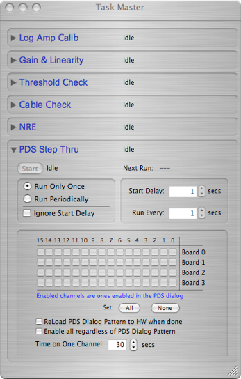

Task Master

ORCA has a general-purpose scheduling object that allows objects to post tasks for execution. Tasks can be scheduled to run immediately or after a specified delay and can be repeated at specified intervals. ORCA script tasks are automatically included into the list of tasks that are managed by the Task Master.
Here’s an example of a task dialog:
There are no ORCA generic tasks at this time. All of the registered tasks in this example came from the NCD experiment object.

Task title

Task specific progress is shown here
Start/stop button and current state


After a task is started it will delay actually starting for this many secs unless the Ignore Start Delay option is selected
If the Run Periodically option is selected, then the task will restart after this many seconds
Other tasks being managed
All tasks have this section
This section is optional and is task specific